The Hallucination Archives is a micro-project exploring the visual logic and failure modes of contemporary generative AI. Borrowing conceptual structure from Jonathan Basile’s Library of Babel, the project positions AI models as modern librarians: systems that generate infinite possibilities but do not understand the content they produce.
The work focuses on hallucinations — not as glitches, but as structural features of probabilistic models. Using prompt-driven image generation, OCR-style annotation, grid-based typographic systems, and intentionally “misread” display type, the project visualizes how AI errors occur and how they shape the aesthetic language of machine-generated media.
Developed as a collaboration between a human designer and a large language model, the project treats misinterpretation as a design material. The tools that generate the imagery also assist in naming, structuring, and critiquing it, turning the site itself into a kind of live chat log between human and AI about what it means to build a library out of predictions.
booklet
posters
spatial
social
ephemera
else
Hi I'm Kyle, this is a student project for the ArtCenter College of Design. IG kylev.gx | EMAIL kylevahamaki@gmail.com